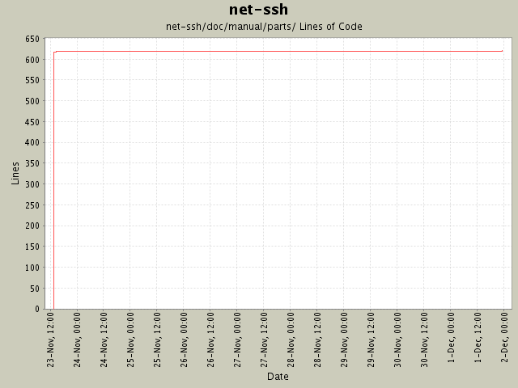

Summary Period: 2004-11-23 to 2004-12-01
[root]/net-ssh/doc/manual/parts

Total Lines Of Code:
620 (2005-01-07 15:12)
| Author | Changes | Lines of Code | Lines per Change |
|---|---|---|---|
| minam | 30 (100.0%) | 623 (100.0%) | 20.7 |
Pageant support! Fixed documentation. Bumped version to 0.6.0. Added
support for external services. The USERNAME environment variable is used if
USER is not set. Moved the README to the project root (for consistency with
other project files). Fixed some documentation typos.
4 lines of code changed in:
Oops. :verbosity should have been :verbose.
1 lines of code changed in:
Documented the :log and :verbosity options.
2 lines of code changed in:
Updated manual for new version.
616 lines of code changed in:
Generated by StatCVS 0.2.3